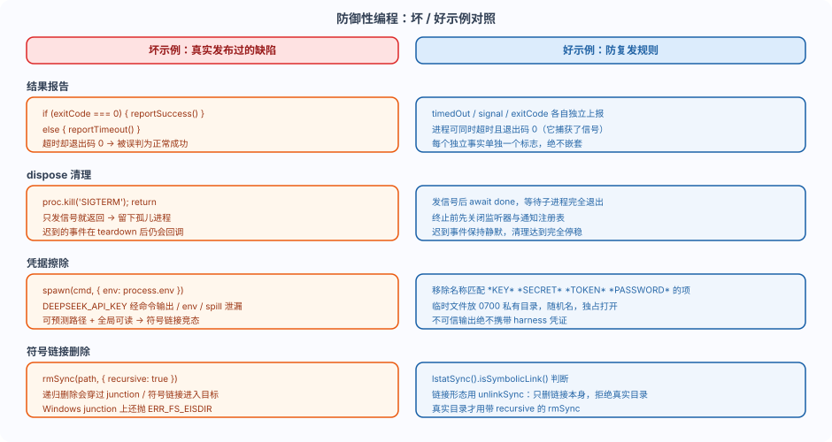

DeeSeek Harness Defensive Programming: Result Reporting, Cleanup, and Credentials
After writing so many plugins, you may run into a class of edge-case bugs that "can't be reproduced in tests, but blow up the moment they go live."
The official docs group them into "hard-won bug category rules" — each one is a bug that was actually shipped or nearly shipped.
This post covers the five most important defensive programming patterns: result reporting, dispose quiescence, credential erasure, link deletion, and callback isolation.
In one sentence: these patterns prevent "a simple edge case from taking down the entire Agent."
First look at the comparison chart
The diagram below compares bad examples side-by-side with good examples, each one drawn from a real bug category.

The official docs call these patterns the "please read this before writing lifecycle, concurrency, child process, or cleanup code" rules.
Orthogonal results reported independently
A result can have multiple properties simultaneously: a process may have timed out but still exit with code 0 because it caught the termination signal.
Each independent fact (timedOut、signal、exitCode) should each be reported separately.
Never nest the reporting of one flag inside the branch of another flag; otherwise callers may mistake an early-terminated run for normal success.
Example
// Run a child process and orthogonally report three independent facts: timedOut, signal, exitCode.
import { spawn, type ChildProcess } from 'node:child_process'
export interface RunResult {
timedOut: boolean // Independent fact 1: whether it timed out
signal: NodeJS.Signals | null // Independent fact 2: whether it was terminated by a signal
exitCode: number | null // Independent fact 3: exit code
stdout: string
stderr: string
}
export function run(argv: string[], timeoutMs: number): Promise<RunResult> {
return new Promise((resolve, reject) => {
const child: ChildProcess = spawn(argv[0], argv.slice(1), {
stdio: ['ignore', 'pipe', 'pipe'],
})
let stdout = ''
let stderr = ''
child.stdout.on('data', (d: Buffer) => (stdout += d))
child.stderr.on('data', (d: Buffer) => (stderr += d))
// Independent fact 1, maintained separately: timeout is a flag, unrelated to the exit code.
let timedOut = false
const timer = setTimeout(() => {
timedOut = true
child.kill('SIGTERM') // Timeout triggers termination
}, timeoutMs)
child.on('close', (code, signal) => {
clearTimeout(timer)
// The three fields are returned independently: the process may have timedOut=true and exitCode=0,
// Because it catches SIGTERM after timeout and exits with 0.
resolve({ timedOut, signal, exitCode: code, stdout, stderr })
})
child.on('error', reject)
})
}
With this style, callers can combine checks:timedOutis true butexitCodeIf it's 0, it means "force-killed, but the process masked it with a 0."
If reporting is nested, this combination can never be expressed.
dispose must reach a fully-stopped state.
If the cleanup flow only sends a terminate or abort signal and returns without waiting for the work to actually stop, it leaves orphan processes behind.
Cleanup logic should use an async flow and wait for the child process to exit (send terminate signal, then waitdone）。
You should also close the listener registries and notification registries before terminating the process, keeping late completion events silent.
Example
// dispose must fully stop: after sending signal, wait for child process to exit, rather than returning after just sending the signal.
import { once } from 'node:events'
import type { ChildProcess } from 'node:child_process'
export async function disposeQuiescent(child: ChildProcess): Promise<void> {
// 1. First remove the listeners so that late completion events remain silent.
child.removeAllListeners()
// 2. Request stop: issue termination signal.
child.kill('SIGTERM')
// 3. Wait for the child process to actually exit; if it still hasn't exited after the timeout, escalate to SIGKILL.
// Promise.race guarantees that dispose will not be hung forever by a child process that refuses to exit.
const forceKill = new Promise<void>((resolve) => {
setTimeout(() => {
child.kill('SIGKILL')
resolve()
}, 5_000)
})
await Promise.race([once(child, 'exit').then(() => undefined), forceKill])
}
This way, when dispose returns, the child has either exited or been force-killed with SIGKILL.
Credential scrubbing: never expose environment variables to untrusted output.
Spawned commands should use a scrubbed environment, removing names matching*KEY*、*SECRET*、*TOKEN*or*PASSWORD*the item.
Otherwise, harness credentials may leak through command output,envor spill file leaks.
Temporary files and spill files should be placed in a private directory with 0700 permissions, use random file names, and be opened in an exclusive, owner-only accessible manner ('wx'、0o600）。
Example
// Clean environment variables before starting the command to prevent harness credentials from leaking through command output or env.
// Sensitive items matching *KEY* *SECRET* *TOKEN* *PASSWORD* are all removed.
const SENSITIVE_NAME = /.*(?:KEY|SECRET|TOKEN|PASSWORD).*/i
export function scrubEnv(env: NodeJS.ProcessEnv): Record<string, string> {
const clean: Record<string, string> = {}
for (const [key, value] of Object.entries(env)) {
if (SENSITIVE_NAME.test(key)) continue // Skip sensitive keys directly
if (value !== undefined) clean[key] = value
}
return clean
}
// Usage:spawn(argv[0], argv.slice(1), { env: scrubEnv(process.env), ... })
In the example environment,
DEEPSEEK_API_KEYSuch variables must go through this erasure path.Let command output,
envor spill files carrying them, which is equivalent to handing the keys to anything that can read the output.
Delete symlinks with unlink.
A path that may be a symlink or Windows junction should first uselstatSync().isSymbolicLink()Judge, then useunlinkSyncDelete.
unlink only removes the link itself and refuses real directories, so it never follows a link into its target.
Calling junction on WindowsrmSync(link)Will throwERR_FS_EISDIR; recursive deletion may traverse the junction into its target.
Only real directories use taperecursiveofrmSync。
Example
// Delete link-form paths with unlink, never recursively follow links into their targets.
import { lstatSync, rmSync, unlinkSync } from 'node:fs'
export function removePath(p: string): void {
// First check if it is a symbolic link (or Windows junction).
if (lstatSync(p).isSymbolicLink()) {
// unlink only deletes the link itself and refuses actual directories; it does not follow links
unlinkSync(p)
return
}
// Only after confirming the actual directory, use rmSync with recursive.
rmSync(p, { recursive: true })
}
Isolating callback exceptions in the dispatcher
If a user-provided listener throws an exception, it must not cause the promise it belongs to to be rejected, nor starve the listeners queued behind it.
Wrap the dispatch loop in try/catch and log errors.
A misbehaving subscriber must never break the core lifecycle.
Example
// Dispatcher isolates callback exceptions: a bad subscriber cannot break the core lifecycle.
export function dispatch(listeners: ReadonlyArray<() => void>): void {
for (const listener of listeners) {
try {
listener()
} catch (err) {
// Log and continue dispatching, never reject, and never starve subsequent listeners.
console.error('[dispatch] a listener failed:', err)
}
}
}
This pattern is everywhere inside dsh:session/eventobserver failures are logged and isolated, rather than letting already-committed appends fail.
It guarantees that "a plugin crashing its listener" won't bring the entire Agent loop to a halt.
More modes overview
The official docs also record two more worth remembering:
| Mode | Rules |
|---|---|
| Both sides of the public contract must comply | When receiving multiple representations of the same result, normalize them before returning through the public API; consumers should not have to guess whether exceptions come from the provider, the wrapper layer, or their own assembly logic |
| Asynchronous state is not synchronous state | Do notagent/statusorwhenIdle()As an instancefollowup()the result of; the caller that truly owns a run must explicitly define the interval |
The testing counterparts of these rules (real entry paths, verifying actual results, resource ownership) are detailed in testing.md, which will be covered in the next post.
Summary self-test
Defensive programming plugs the pitfalls prone to failing at boundaries in advance: orthogonal result reporting, fully quiesced dispose, credential erasure, safe link deletion, and callback exception isolation.
Self-test questions:
| Problem | Reference |
|---|---|
| A process timed out, but the exit code is 0 — what does that mean? | It may have caught the termination signal and exited with 0 on its own; timedOut and exitCode are two independent facts. |
| What's the risk of only sending SIGTERM and returning when cleaning up a child process? | It leaves orphan processes; you should wait for exit, then escalate to SIGKILL on timeout. |
| What should you use to delete a path that may be a symlink? | First check with lstatSync, then use unlinkSync; only use rmSync recursive for real directories. |